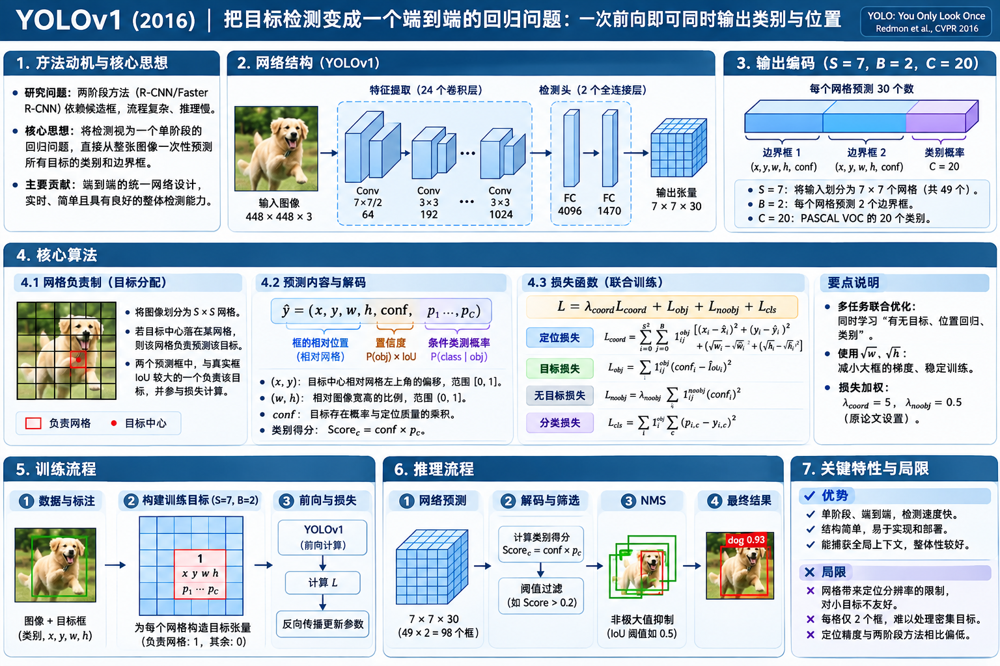

YOLOv1 网络结构、核心算法、训练与推理
You Only Look Once: Unified, Real-Time Object Detection · Redmon, Divvala, Girshick & Farhadi · CVPR 2016
Faster R-CNN 已经能够学习生成候选框，但仍遵循“先提 Proposal，再对 RoI 分类”的两阶段思路。YOLOv1 直接把目标检测定义为整张图像上的回归任务：一次前向传播，预测所有位置的框和类别。
研究思想：为什么不沿用 Proposal → RoI 的路线？
从“先找到可能的物体，再分类”转向“直接预测所有物体”。
Faster R-CNN 把 Selective Search 换成可学习的 RPN，但仍有候选框生成、RoI Pooling、第二阶段分类回归等步骤。YOLOv1 做了另一种选择：用一张图像作为一个整体输入，将检测框坐标、置信度和类别概率统一放进固定尺寸的输出张量。这不是简单删掉 RPN，而是改变了任务形式。
研究路径：使“提出候选区域”可学习，并让 Proposal 与检测头共享计算。
研究路径：不使用 Proposal / RoI Pooling，直接从整图特征回归目标的位置和类别。
网络结构：从一张图到 7 × 7 × 30
将 Backbone 和原始预测头连成完整、可追踪的数据流。

网络究竟输出了一张什么样的“特征图”？——原版最后是 FC 输出的 1,470 个数值，再组织成 7 × 7 × 30 张量，不是如今常见的纯卷积解耦 Head。
主干层解决什么
24 层卷积提取整图多层级视觉特征；部分使用 1×1 卷积压缩通道再接 3×3 卷积。网络受 GoogLeNet 启发，但不是 Inception Block 的直接复制。
两个 FC 在做什么
将整张图像的卷积特征联合映射到固定维预测，最后整理成 49 个网格的 30 维输出。可利用全图上下文，但引入较大的全连接层。
与现代 YOLO 的区别
原始 YOLOv1 没有 Anchor、FPN/PAN、多尺度检测头与现代解耦 Head。它直接回归相对网格的中心与相对整图的宽高。
原论文在 ImageNet 分类任务上先预训练前 20 个卷积层，再加 4 个卷积层和 2 个全连接层做检测；预训练时输入为 224×224，检测时升至 448×448。除最后一层线性输出外，网络使用 Leaky ReLU。
核心算法：7 × 7 网格怎样直接预测物体？
先区分“哪个格子负责”与“这个格子输出哪几个框”。
3.1 网格负责制：由 GT 的中心点决定
先在整张图像上划出 7×7 的逻辑网格。目标框的中心落在哪个网格，哪个网格就对该目标负责。这里的网格不是把图片裁成 49 张分别跑 CNN，而是 49 个预测位置共享同一次整图网络计算。
负责的是一个目标
完整目标框可以跨越很多网格。只有中心所属格承担它的类别与定位正样本监督。
这个规则的代价
两个目标中心如果落在同一格，原始结构难以同时为它们提供不同类别的完整监督。
3.2 每格的 30 个输出值：为什么 2 个框，却只有 1 组分类？
原始 PASCAL VOC 设定：S=7、B=2、C=20。每格输出两套 (x,y,w,h,confidence)，但是类别只输出 一套 20 维条件类别概率 P(class | object)，而不是每个框都各有一个分类器。
3.3 一个框的 5 个值，怎么还原到原图坐标？
x,y 是中心相对于当前网格的位置（取值通常按 0～1 表示），w,h 是宽高相对于整张图的比例；置信度用于表达目标存在与定位准确度。这里与 Faster R-CNN 相对 Anchor 的 tx,ty,tw,th 参数化不同。
centerY = (row + y) / 7 × H
boxW = w × W, boxH = h × H
核心难点：同一个网格的两个框到底谁学习 GT？
一格同时输出两个预测框，但并不是对同一个 GT 同时训练两个回归器。
一个真实目标首先由其中心所在格负责；该格里再比较两个框预测器与这个 GT 的 IoU，选当前 IoU 较高的预测器负责框坐标损失。另一个预测器不承担这个 GT 的坐标回归；其 confidence 通常按非负责框处理。
argmax(IoU) 是离散分配规则；一旦选定，对被选中的 x,y,w,h 等连续输出求 Loss，梯度仍可以沿着网络参数反传。负责框：正样本
对它计算坐标回归损失，confidence 朝该框与 GT 的 IoU 目标学习；中心所在网格还计算一组类别损失。
未负责框：无坐标监督
它不对当前 GT 计算边框坐标损失，confidence 被推向零。是否负责会随模型预测改变，不是预设的固定框尺寸。
完整训练：到底有哪些监督，参数怎么更新？
一次训练不是“图像 → 框”这么简单；核心是把 GT 转成网格责任和多项 Loss。
5.1 为什么一个网络需要五项损失？
因为网络同时学习三件不同的事：框放在哪里、这个框是否可靠、这里是什么类别。原论文使用加权平方误差，不是后来的 CIoU、DFL 或 BCE 式现代检测损失。其五项可以按下面拆开记忆。
| 组成 | 作用到谁 | 计算什么 | 设计动机 |
|---|---|---|---|
| ① 位置 (x,y) | 负责的正样本框 | 5 × [(x−x*)² + (y−y*)²] | 鼓励预测中心接近 GT |
| ② 尺寸 (w,h) | 负责的正样本框 | 5 × [(√w−√w*)² + (√h−√h*)²] | 同样误差对小框更敏感 |
| ③ 有目标 confidence | 负责的正样本框 | (conf−IoU)² | 分数同时体现存在与定位质量 |
| ④ 无目标 confidence | 所有未负责的框 | 0.5 × (conf−0)² | 降低大量背景框对梯度的压制 |
| ⑤ 类别概率 | 含目标的网格 | Σ类 (p(c)−p*(c))² | 每格一组条件类别概率 |
x=0.48, y=0.50, w=0.38, h=0.58；为便于单独研究，假设其余 19 类输出恰好匹配监督目标，因此它们的误差为 0。5.2 反向传播：为什么 YOLOv1 可以整网训练？
可微路径
坐标、类别、confidence 的预测由 CNN + FC 输出；平方误差可以对这些连续输出求导，再用链式法则更新可训练权重。
离散责任分配
“目标中心落在哪个格”以及“谁的 IoU 最大”是用来分配监督的离散规则，不必让梯度穿过分配决策本身，仍可对已分配预测求导。
完整推理：1470 个预测数，怎样变成检测框？
明确输出数量、类别评分与后处理，不遗漏最后一步。
score 将类别的条件概率与每个框的 confidence 相乘。原论文把其视为类别与定位质量的联合分数。注意这里不是 98 套独立的 20 类输出：每格两个框共享同一套类别概率。输出数量一定要分清
49 个网格、98 套框坐标和 confidence、49 套类别概率。每套类别向量 20 维，可与其所在格的两个框 confidence 分别相乘。
“You Only Look Once”的含义
每张图像只需一次 CNN 前向推理，同时产生全部候选预测；不是完全没有后处理，原始 YOLOv1 仍使用阈值过滤和 NMS。
研究贡献与适用边界：这次演进改变了什么？
以历史问题为中心，不把现代版本的成果算到 YOLOv1 头上。
| 方法 | 候选位置从哪里来 | 网络如何利用候选区域 | 训练/推理组织 |
|---|---|---|---|
| R-CNN | Selective Search | 每个候选框单独跑 CNN | 多阶段训练，逐框推理 |
| SPPnet | Selective Search | 共享整图卷积，区域 SPP | 仍有分阶段学习 |
| Fast R-CNN | Selective Search | 共享卷积 + RoI Pooling | 分类回归联合微调 |
| Faster R-CNN | 可训练 RPN | Proposal + RoI Head 两阶段 | 共享特征的可训练提框 |
| YOLOv1 | 固定网格直接预测 | 不生成 Proposal，不用 RoI Pooling | 一次整图前向，统一预测框和类别 |
里程碑意义
让目标检测成为整图上的统一回归问题，显著压缩推理流水线，推动实时单阶段检测成为独立的重要研究路线。
机制限制
每格仅一组类别分布，多个目标中心重叠在一格时容易受限；对密集小目标、奇异宽高比与精细定位不够友好。
不能倒推的概念
Anchor、多尺度预测、FPN/PAN、解耦 Head、CIoU/DFL、端到端 NMS-free 等属于后续不同技术路线，不能直接当成 YOLOv1 的组成。
原论文报告 YOLO 相比当时的 R-CNN 类方案背景误检较少，但定位误差更多，尤其对小目标不理想。这不是“单阶段必然比两阶段不准”的普遍规律，而是 2016 年这一具体模型结构与实验设置的边界。
理解检查与论文依据
把常见误解转换成可以自己回答的问题。
Q1 · YOLOv1 为什么没有 RoI Pooling？
因为它没有先提出 RoI 再逐区分类；整张图直接输出 49 个网格对应的固定长度预测。
Q2 · 一个格子有两套框，是两个类别吗？
不是。两个框各有坐标和 confidence，但是它们共享一组 20 类条件概率。
Q3 · 负责哪一个框，是网络里可导的算子吗？
责任分配按当前 IoU 作离散选择；Loss 对负责框的连续预测求导，再反向更新网络权重。
Q4 · 7×7 网格是不是 49 次 CNN？
不是。CNN 对整张 448×448 图像只前向一次，FC 输出统一的 1,470 维预测。
主要依据：Joseph Redmon, Santosh Divvala, Ross Girshick, Ali Farhadi. You Only Look Once: Unified, Real-Time Object Detection, CVPR 2016（arXiv 初稿 2015）。
CVF 原始论文页面 · arXiv 页面 · 论文 PDF